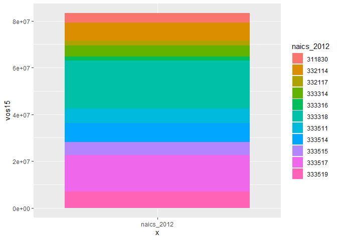

The goal of naicsmatch is to provide functions and crosswalks from and between NAICS sector codes
The North American Industry Classification system is the standard used by Federal statistical agencies in classifying businesses for the purposes of data collection, analysis, and publishing statistical data. see here
The NAICS code classification system is regularly updated, and so translating between different iterations can be necessary to do comparisons between different data sources. This package provides some functions to automate some of these translations using concordances downloaded from the U.S. Census and other agencies and data sources.
References:
Installation
You can install the development version from GitHub with:
Example
This package provides concordances between different vintages of NAICS codes, and functions to facilitate converting data from one NAICS categorization to another.
library(tidyverse)
#> -- Attaching packages ---------------------------- tidyverse 1.2.1 --
#> v ggplot2 3.2.1 v purrr 0.3.3
#> v tibble 2.1.3 v dplyr 0.8.3
#> v tidyr 1.0.0 v stringr 1.4.0
#> v readr 1.3.1 v forcats 0.4.0
#> -- Conflicts ------------------------------- tidyverse_conflicts() --
#> x dplyr::filter() masks stats::filter()
#> x dplyr::lag() masks stats::lag()
library(naicsmatch)
sum(ex_asm09$vos09)
#> [1] 313666846
ex_asm09
#> # A tibble: 25 x 4
#> naics_2007 naics_label_2007 year vos09
#> <chr> <chr> <dbl> <dbl>
#> 1 3118 Bakeries and tortilla manufacturing 2009 59448681
#> 2 31181 Bread and bakery product manufacturing 2009 35606371
#> 3 31181M Bread and bakery product manufacturing 2009 35606371
#> 4 31182 Cookie, cracker, and pasta manufacturing 2009 20684887
#> 5 31182M Cookie, cracker, and pasta manufacturing 2009 20684887
#> 6 31183 Tortilla manufacturing 2009 3157424
#> 7 311830 Tortilla manufacturing 2009 3157424
#> 8 33211 Forging and stamping 2009 26125051
#> 9 332114 Custom roll forming 2009 5971708
#> 10 332117 Powder metallurgy parts manufacturing 2009 1322872
#> # ... with 15 more rows
## basic example codeA sample of data from the 2009 Annual Survey of Manufacturers is included as ex_asm09. This data was collected and published using the 2007 NAICS classification codes.
The included data set naics_2007_2012 is a concordance between the 2007 and 2012 classifications:
library(tidyverse)
naics_2007_2012
#> # A tibble: 1,184 x 2
#> naics_2007 naics_2012
#> <chr> <chr>
#> 1 111110 111110
#> 2 111120 111120
#> 3 111130 111130
#> 4 111140 111140
#> 5 111150 111150
#> 6 111160 111160
#> 7 111191 111191
#> 8 111199 111199
#> 9 111211 111211
#> 10 111219 111219
#> # ... with 1,174 more rowsasm09_2012 <- ex_asm09 %>% left_join(naics_2007_2012, by = "naics_2007")
sum(asm09_2012$vos09)
#> [1] 313666846
asm09_2012
#> # A tibble: 25 x 5
#> naics_2007 naics_label_2007 year vos09 naics_2012
#> <chr> <chr> <dbl> <dbl> <chr>
#> 1 3118 Bakeries and tortilla manufacturing 2009 5.94e7 <NA>
#> 2 31181 Bread and bakery product manufactur~ 2009 3.56e7 <NA>
#> 3 31181M Bread and bakery product manufactur~ 2009 3.56e7 <NA>
#> 4 31182 Cookie, cracker, and pasta manufact~ 2009 2.07e7 <NA>
#> 5 31182M Cookie, cracker, and pasta manufact~ 2009 2.07e7 <NA>
#> 6 31183 Tortilla manufacturing 2009 3.16e6 <NA>
#> 7 311830 Tortilla manufacturing 2009 3.16e6 311830
#> 8 33211 Forging and stamping 2009 2.61e7 <NA>
#> 9 332114 Custom roll forming 2009 5.97e6 332114
#> 10 332117 Powder metallurgy parts manufacturi~ 2009 1.32e6 332117
#> # ... with 15 more rowsWeighting by 1 / N
naics_2007_2012_wgt <- naics_2007_2012 %>%
group_by(naics_2007) %>%
summarize(wgt = 1 / n())
filter(naics_2007_2012_wgt, wgt != 1)
#> # A tibble: 6 x 2
#> naics_2007 wgt
#> <chr> <dbl>
#> 1 221119 0.2
#> 2 238190 0.5
#> 3 238330 0.5
#> 4 334119 0.5
#> 5 423620 0.5
#> 6 423720 0.5asm09_2012_v2 <- asm09_2012 %>%
left_join(naics_2007_2012_wgt,
by = c("naics_2007")) %>%
mutate(vos09 = vos09 * wgt)
sum(asm09_2012_v2$vos09)
#> [1] NA
asm09_2012_v2
#> # A tibble: 25 x 6
#> naics_2007 naics_label_2007 year vos09 naics_2012 wgt
#> <chr> <chr> <dbl> <dbl> <chr> <dbl>
#> 1 3118 Bakeries and tortilla manufac~ 2009 NA <NA> NA
#> 2 31181 Bread and bakery product manu~ 2009 NA <NA> NA
#> 3 31181M Bread and bakery product manu~ 2009 NA <NA> NA
#> 4 31182 Cookie, cracker, and pasta ma~ 2009 NA <NA> NA
#> 5 31182M Cookie, cracker, and pasta ma~ 2009 NA <NA> NA
#> 6 31183 Tortilla manufacturing 2009 NA <NA> NA
#> 7 311830 Tortilla manufacturing 2009 3157424 311830 1
#> 8 33211 Forging and stamping 2009 NA <NA> NA
#> 9 332114 Custom roll forming 2009 5971708 332114 1
#> 10 332117 Powder metallurgy parts manuf~ 2009 1322872 332117 1
#> # ... with 15 more rowsasm09_2012_v2 %>%
naics_sankey() +
labs(
title = "Allocating Split Categories by 1 / N"
)
#> Warning: Removed 24 rows containing non-finite values (stat_parallel_sets).
#> Warning: Removed 24 rows containing non-finite values
#> (stat_parallel_sets_axes).
#> Warning: Removed 24 rows containing non-finite values
#> (stat_parallel_sets_axes).
Aggregation
asm09_2012_v3 <- asm09_2012_v2 %>%
group_by(naics_2012) %>%
summarize(vos09 = sum(vos09, na.rm = TRUE))
sum(asm09_2012_v3$vos09)
#> [1] 39364480
asm09_2012_v3
#> # A tibble: 12 x 2
#> naics_2012 vos09
#> <chr> <dbl>
#> 1 311830 3157424
#> 2 332114 5971708
#> 3 332117 1322872
#> 4 333314 4673039
#> 5 333316 1975217
#> 6 333318 1659541
#> 7 333511 4221870
#> 8 333514 5745328
#> 9 333515 3502270
#> 10 333517 4691139
#> 11 333519 2444072
#> 12 <NA> 0Weighting by Data
A common application is to calculate weights from one dataset and apply them to another dataset, when putting them both into common NAICS classifications.
#ex_asm09
#ex_asm15
naics_2007_2012_datawgt <- naics_2007_2012 %>%
left_join(ex_asm15, by = "naics_2012") %>%
# TODO: weighting only works for positive values?
filter(!is.na(vos15), vos15 > 0) %>%
group_by(naics_2007, naics_2012) %>%
summarize(vos15 = sum(vos15, na.rm = TRUE)) %>%
group_by(naics_2007) %>%
mutate(wgt = vos15 / sum(vos15, na.rm = TRUE))
naics_2007_2012_datawgt
#> # A tibble: 27 x 4
#> # Groups: naics_2007 [27]
#> naics_2007 naics_2012 vos15 wgt
#> <chr> <chr> <dbl> <dbl>
#> 1 311811 311811 3408901 1
#> 2 311812 311812 31802122 1
#> 3 311813 311813 5769729 1
#> 4 311821 311821 11651966 1
#> 5 311822 311824 13238846 1
#> 6 311823 311824 13238846 1
#> 7 311830 311830 3948833 1
#> 8 332111 332111 8538073 1
#> 9 332112 332112 2998065 1
#> 10 332114 332114 7832447 1
#> # ... with 17 more rowsasm09_2012_v4 <- asm09_2012 %>%
left_join(naics_2007_2012_datawgt,
by = c("naics_2007", "naics_2012")) %>%
mutate(vos09 = vos09 * wgt)
sum(asm09_2012_v4$vos09)
#> [1] NA
asm09_2012_v4
#> # A tibble: 25 x 7
#> naics_2007 naics_label_2007 year vos09 naics_2012 vos15 wgt
#> <chr> <chr> <dbl> <dbl> <chr> <dbl> <dbl>
#> 1 3118 Bakeries and tortilla~ 2009 NA <NA> NA NA
#> 2 31181 Bread and bakery prod~ 2009 NA <NA> NA NA
#> 3 31181M Bread and bakery prod~ 2009 NA <NA> NA NA
#> 4 31182 Cookie, cracker, and ~ 2009 NA <NA> NA NA
#> 5 31182M Cookie, cracker, and ~ 2009 NA <NA> NA NA
#> 6 31183 Tortilla manufacturing 2009 NA <NA> NA NA
#> 7 311830 Tortilla manufacturing 2009 3157424 311830 3948833 1
#> 8 33211 Forging and stamping 2009 NA <NA> NA NA
#> 9 332114 Custom roll forming 2009 5971708 332114 7832447 1
#> 10 332117 Powder metallurgy par~ 2009 1322872 332117 2087871 1
#> # ... with 15 more rowsasm09_2012_v4 %>%
mutate(x = "naics_2012") %>%
ggplot(aes(x = x, y = vos15, fill = naics_2012)) +
geom_col()
#> Warning: Removed 12 rows containing missing values (position_stack).
asm09_2012_v4 %>%
naics_sankey() +
labs(
title = "Allocating Split Categories by Second Dataset"
)
#> Warning: Removed 24 rows containing non-finite values (stat_parallel_sets).
#> Warning: Removed 24 rows containing non-finite values
#> (stat_parallel_sets_axes).
#> Warning: Removed 24 rows containing non-finite values
#> (stat_parallel_sets_axes).